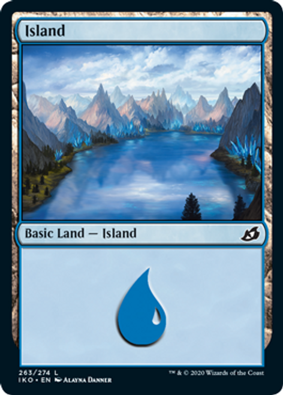
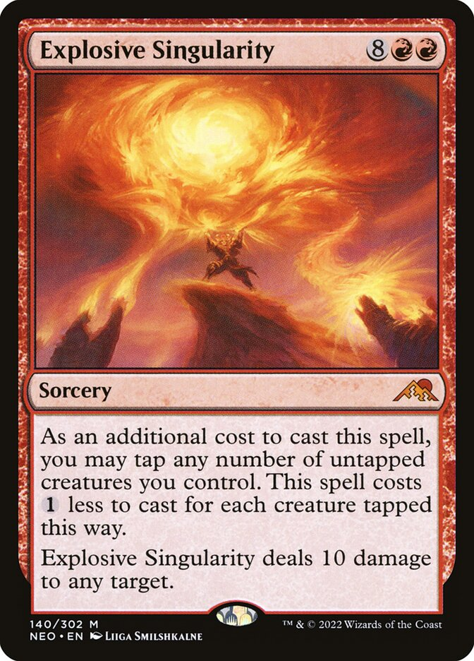
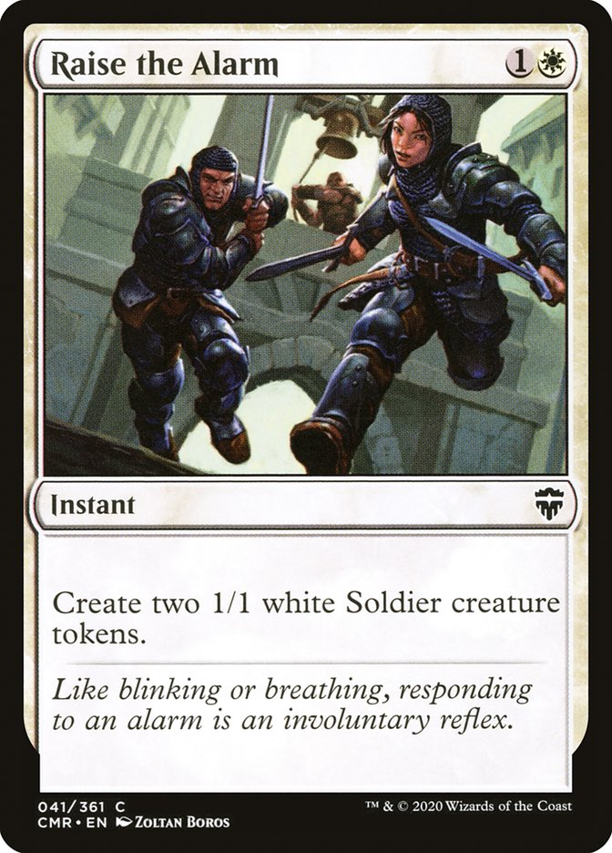
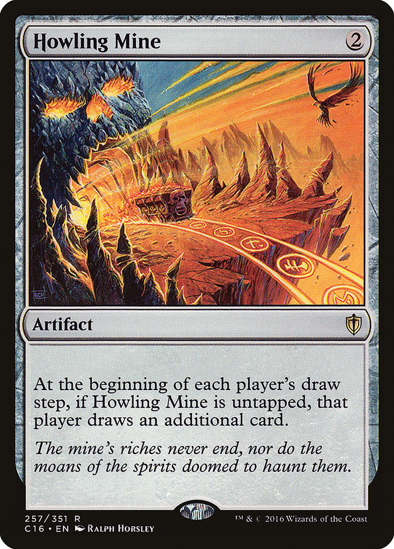
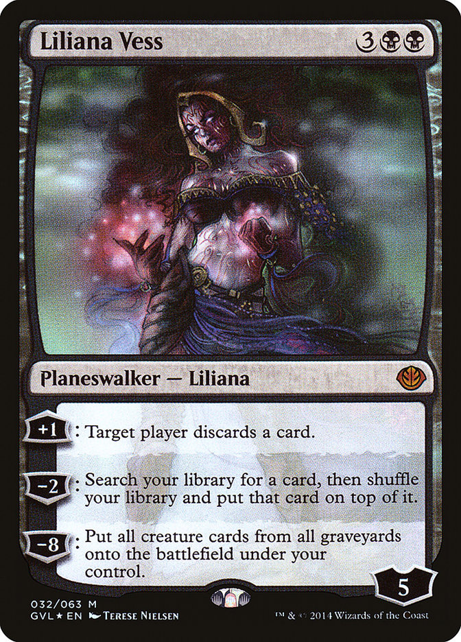

Card Types Explained
Here, we can look at some examples of the cards you are likely to encounter while playing Magic: the Gathering.
You can click on the title of each explaination to see an example of the card type.
|  |
LandsLandsLands are the most common and basic type of card you are likely to come across. Lands represent locations under the player's control, most of which have mana abilities. Because mana is needed to use almost any card or ability, most decks need a high number of mana-producing lands (typically between 33-50% of the total deck) to function effectively. Taking mana from the lands represents the strands of magic and the most commonly printed Magic cards are the five basic lands, one for each color, each of which intrinsically produces one mana of a specific color. |

|
CreaturesCreaturesCreatures are summoned under the control of the casting player during a main phase and for the first turn, they has what is commonly called "summoning sickness" until the beginning of its controller's next turn. A creature with summoning sickness cannot attack or use an activated ability with the tap or untap symbol in its cost, but it can block or use any other abilities it has. On the bottom-right corner of each creature card is that creature's power and toughness, respectively. The power is the amount of damage a creature deals to an opponent or other creatures in combat, and the toughness is the amount of damage a creature can survive. A creature with damage equal to or greater than its toughness has "lethal damage," and is destroyed. Similarly, a creature whose toughness is reduced to zero or less will go to its owner's graveyard. Any damage a creature takes will accumulate until the end of the turn when all damage is removed from all creatures. |
|  |
SorcerySorcerySorceries are never put onto battlefield; instead, they take effect when their mana cost is paid and the spell resolves. Sorceries share the timing restrictions as all permanent spell types, that is, only be during the player's main phase, and only when nothing else is on the stack. Sorceries are often one shot abilities that can either help you or hurt your opponents efforts to gain advantage. Once they are used, they are put into the graveyard |
|  |
InstantInstantInstants are the only card type in Magic to have no timing restrictions. They can be played at almost any time during the game, including during other player's turns and while another spell or ability is waiting to resolve. Instants, like Sorceries, are often one shot abilities that can either help you or hurt your opponents efforts to gain advantage. Once they are used, they are put into the graveyard. |

|
EnchantmentEnchantmentEnchantments are a card type that represents persistent magical effects, usually remaining in play indefinitely. Most enchantments have continuous effects or triggered abilities, but some have abilities that can be activated by their controllers. Occasionally, some creatures or other cards can also have the sub-type enchantment, which means they are effected by cards that effect both. |
|  |
ArtifactArtifactArtifacts are permanents that represent magical items, animated constructs, pieces of equipment, or other objects and devices. Artifact, as a card type, is broader than the normal definition as many other cards can also be a Magic “artifact” such as creatures or even lands. As with the enchantment example, this means they can be effected by cards that effect both. |
|  |
PlaneswalkerPlaneswalkerLike the player, a planeswalker card represents a powerful being that can move from plane to plane. Planeswalkers have an intrinsic ability to enter the battlefield with a set number of loyalty counters, printed in the lower right of the card. A planeswalker can be attacked, like a player, or be damaged by an opponent's spell or ability. Any damage dealt to planeswalkers removes that many loyalty counters and a planeswalker with no loyalty counters is put into the graveyard. Planeswalkers typically have three abilities: one ability that adds loyalty counters as a cost for a small benefit, one that removes a small number of counters as a cost for a larger effect, and one that removes a large number of loyalty counters for a big effect. The last effect is commonly referred to as the planeswalker's "ultimate" ability and usually leaves the opponent in a devastated state. The starting loyalty of a planeswalker is commonly significantly lower than the cost of its ultimate and a player has to build up the loyalty to access it. |